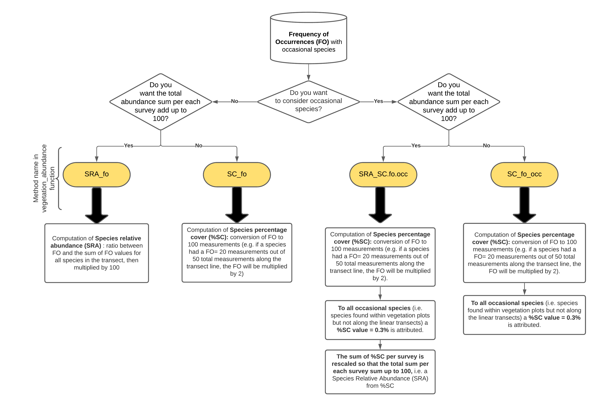

Introduction to iPastoralist
Marco Pittarello
Source:vignettes/Introduction_to_iPastoralist.Rmd
Introduction_to_iPastoralist.RmdiPastoralist
An R package for vegetation data processing, characterization, and classification, with applications in grassland and pasture ecology, point-quadrat and phytosociological methods.
iPastoralist provides tools for managing and analysing botanical composition data collected using point-quadrat (point-intercept) and phytosociological survey methods.
The package supports the conversion and standardization of vegetation data, the calculation of biodiversity, pastoral, and ecological indicators, and the numerical classification and floristic characterization of plant communities.
Website: https://marcopittarello.github.io/iPastoralist/
Overview
The main functionalities of iPastoralist are organized into three complementary analytical components:
Vegetation data preparation and conversion: processing botanical survey data and converting species frequency or cover measurements into suitable quantitative formats.
Vegetation characterization: calculating biodiversity indices, Pastoral Value, ecological indicator values, and descriptors of floristic composition.
Vegetation classification and interpretation: supporting numerical vegetation classification, the identification of diagnostic and characteristic species, and the interpretation of vegetation groups according to point-quadrat and phytosociological approaches.
These components can be used independently or combined into an integrated workflow for vegetation analysis.
When to use it
iPastoralist is designed to work with botanical composition data collected using two main survey methods:
- Point-quadrat / pinpoint (point-intercept) method: plant species are recorded at fixed intervals along a linear transect (Daget and Poissonet, 1971).
- Phytosociological method: plant species occurring within vegetation plots are recorded, and their cover is visually estimated.
For point-quadrat surveys, the package also supports datasets including occasional species, i.e., species recorded within a surrounding vegetation plot but not intercepted along the transect.
This is particularly relevant because point-intercept sampling may fail to detect rare or low-abundance species, which can nevertheless contribute to biodiversity and vegetation characterization.
The package is particularly suited to grassland and pasture studies, although several functions can also be applied to other vegetation types.
Main features
1. Vegetation data preparation and conversion
iPastoralist provides functions to process botanical survey data and convert species frequency or cover measurements into quantitative values suitable for ecological and vegetation analyses.
1.1. Point-quadrat / pinpoint (point-intercept) method
The vegetation_abundance() function processes the
frequency of occurrence (FO) of species recorded along
linear transects, either with or without occasional species.
It allows the conversion of FO into two main quantitative measures.
Species Relative Abundance (SRA)
SRA is calculated as the ratio between the frequency of occurrence of a species and the sum of the frequencies of occurrence of all species recorded along the transect, multiplied by 100.
This measure expresses the proportional contribution of each species to the recorded vegetation composition.
Species Percentage Cover (%SC)
FO values can also be converted into frequency-based percentage cover estimates by standardizing the number of contacts to 100 measurement points.
For example, if a species is recorded at 20 out of 50 measurement points, its corresponding %SC is 40%.
For occasional species recorded within the vegetation plot but not intercepted along the transect, a conventional %SC value of 0.3% is assigned.
The processing and conversion procedure implemented in
vegetation_abundance() is summarized in the following
workflow.

For further information about the available conversion methods and
their implementation, see vegetation_abundance().
1.2. Phytosociological method
The PhytoCover() function converts visually estimated
species cover values (%) from phytosociological surveys into different
cover-abundance scales and numerical values:
- Braun-Blanquet cover-abundance scale (Braun-Blanquet, 1932);
- Van der Maarel cover-abundance scale (Van der Maarel, 1979);
- Dominance percentage according to Tasser and Tappeiner (2005).
Conversion table
| Visually estimated cover (%) | Braun-Blanquet | Van der Maarel | Tasser and Tappeiner (%) |
|---|---|---|---|
| 0 | 0 | 0 | 0 |
| <1 | + | 2 | 0.3 |
| 1–5 | 1 | 3 | 2.8 |
| 6–15 | 2a | 5 | 10 |
| 16–25 | 2b | 5 | 20.5 |
| 26–50 | 3 | 7 | 38 |
| 51–75 | 4 | 8 | 63 |
| 76–100 | 5 | 9 | 88 |
These conversions facilitate the preparation of species cover data for subsequent analyses, including vegetation classification and comparisons of floristic composition.
For further details, see PhytoCover().
2. Vegetation characterization
iPastoralist provides functions to characterize plant communities in terms of species diversity, pastoral characteristics, ecological indicator values, and floristic composition.
2.1. Biodiversity indices
The biodiversity() function calculates several
biodiversity metrics, including:
- Species richness: number of plant species recorded within each vegetation survey;
- Shannon diversity index: measure combining species richness and the distribution of relative abundances;
- Effective Number of Species (ENS): transformation of diversity into an effective number of equally abundant species;
- Maximum Shannon diversity: theoretical maximum Shannon diversity for a given species richness;
- Equitability (evenness): measure describing how evenly species abundances are distributed.
These complementary metrics provide information about both the number of species and their relative contributions to the community.
For further details, see biodiversity().
2.2. Pastoral Value
The pastoral_value() function calculates the
Pastoral Value (PV) of vegetation based on the relative
abundance of plant species and their specific forage quality.
PV is a synthetic index to assess the forage quality and productivity of grasslands.
It integrates:
- Species Relative Abundance (SRA), expressing the proportional contribution of each species to the vegetation;
- Index of Specific Quality (ISQ), reflecting the forage characteristics of individual plant species.
The resulting index supports the assessment and comparison of pasture vegetation types in relation to their potential forage value.
For further details, see pastoral_value().
2.3. Ecological indicator values
The ecological_indexes() function calculates
community-level ecological indicator values based on:
- Landolt ecological indicator values;
- Ellenberg ecological indicator values.
Calculations can be performed:
- With or without weighting by species abundance;
- Including or excluding occasional species.
These indicators provide information about the ecological characteristics of vegetation based on the environmental preferences of the species composing the plant community.
They can be used to characterize vegetation along environmental gradients and to support comparisons among vegetation surveys or groups.
For further details, see ecological_indexes().
2.4. Floristic composition
The first_ten_species() function extracts the ten most
abundant species for each vegetation survey, ranked in decreasing order
of abundance.
This function provides a concise description of the main species contributing to vegetation composition.
The output is particularly useful for:
- Summarizing the floristic composition of individual vegetation surveys;
- Identifying the most abundant species;
- Supporting the interpretation of numerical classifications;
- Annotating dendrograms with species information.
For further details, see first_ten_species().
3. Vegetation classification and interpretation
iPastoralist also provides functions supporting the numerical classification of vegetation surveys and the floristic characterization and ecological interpretation of the resulting vegetation groups.
These tools can be applied to datasets derived from point-quadrat or phytosociological surveys, using appropriate species abundance, cover, or presence-absence data.
The classification workflow aims to identify relatively homogeneous vegetation groups based on their floristic composition and to support their interpretation according to point-quadrat and phytosociological approaches.
3.1. Numerical vegetation classification
The package provides tools supporting the identification of vegetation groups based on floristic similarity.
The main objectives include:
- Classification of vegetation surveys: grouping surveys according to their floristic composition through numerical classification methods.
- Evaluation of alternative classifications: comparing alternative partitions of the vegetation dataset using statistical criteria.
- Selection of the number of vegetation groups: supporting the identification of an appropriate classification level by considering numerical criteria and the interpretability of the resulting groups.
These analyses provide a reproducible basis for identifying vegetation units that can subsequently be characterized in terms of floristic composition and ecological properties.
Numerical classification is intended to support, rather than replace, the ecological interpretation of vegetation communities.
3.2. Floristic characterization of vegetation groups
Once vegetation groups have been identified, iPastoralist supports their floristic characterization by distinguishing different roles of plant species within each group.
The main categories include:
Diagnostic species
Species showing a particular affinity or fidelity to one or more vegetation groups, identified using statistical measures of association or fidelity and appropriate significance tests.
Diagnostic species are particularly important for distinguishing vegetation units based on their floristic composition.
Constant species
Species occurring frequently within a particular vegetation group, independently of whether they are exclusive or diagnostic of that group.
Their frequency contributes to the description of the typical floristic composition of vegetation units.
Dominant species
Species characterized by relatively high abundance or cover within vegetation groups.
Dominant species are particularly important for describing vegetation structure and physiognomy.
Companion species
Additional species contributing to the floristic composition of vegetation groups without necessarily showing high fidelity, frequency, or dominance.
Together, these categories provide complementary information for describing and comparing vegetation communities.
3.3. Synoptic vegetation tables
iPastoralist supports the preparation of synoptic vegetation tables, summarizing species frequencies and floristic characteristics across vegetation groups.
These tables facilitate:
- Comparison of species occurrence frequencies among vegetation groups;
- Identification of diagnostic and constant species;
- Identification of dominant species based on abundance or cover;
- Description of the characteristic floristic composition of each vegetation group;
- Comparison of vegetation units for point-quadrat and phytosociological interpretation.
Synoptic tables provide a structured summary of the main floristic differences and similarities among vegetation groups.
Installation
iPastoralist can be installed directly from GitHub using the
pak package.
First, install pak if it is not already available:
install.packages("pak")Then install the latest version of iPastoralist from GitHub:
pak::pak("MarcoPittarello/iPastoralist")Once installed, load the package:
For detailed function documentation, examples, and tutorials, visit the iPastoralist website.
References
Braun-Blanquet J (1932). Plant sociology. The study of plant communities. GD Fuller and HS Conard (Eds.). Authorized English translation of “Pflanzensoziologie”. 1st ed. New York and London: McGraw-Hill Book Co. Inc.
Daget P, Poissonet J (1971). A method of plant analysis of pastures. Annales Agronomiques, 22, 5–41.
Tasser E, Tappeiner U (2005). New model to predict rooting in diverse plant community compositions. Ecological Modelling, 185, 195–211.
Van der Maarel E (1979). Transformation of cover-abundance values in phytosociology and its effects on community similarity. Vegetatio, 39(2), 97–114.